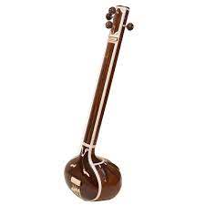

I love playing Indian instruments
Hello everyone. Let me share with you the 5 instruments that I love playing.
The music of the Indian subcontinent is usually divided into two major traditions of classical music: Hindustani music of North India and Karnatak music of South India, although many many regions of India also have their own musical traditions that are independent of these.
I personally love playing Karnatak musical instruments of India. Let me share with you my favorite 5 instruments:
Mrdangam
The mrdangam is an elongated barrel-shaped drum found predominantly in South India. It is derived from the pakhavaj and is used as the primary rhythmic accompaniment in Karnatak music as well as in religious Kirtan music. In the east (Bengal, Odisha), this barrel-shaped drum is known as the khol.
Veena
The veena is one of the most commonly depicted instruments in Indian iconography. The vina has taken many forms in both South and North India.
Tambura
The tambura is a long, stringed instrument made of light hollow wood, with either a wooden or a gourd resonator. It is typically used in accompaniment with other instruments, providing a drone pitch.
Tabla
The tabla is actually two drums played by the same performer. Both drums have compound skins onto which a tuning paste, or siyahi, is added to help generate the wide variety of tones these drums can produce.
Rubab
The rubab is a stringed instrument with a skin-covered resonator that can be bowed or plucked depending on performance tradition.